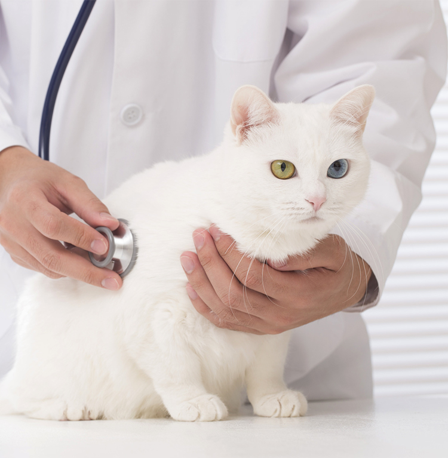
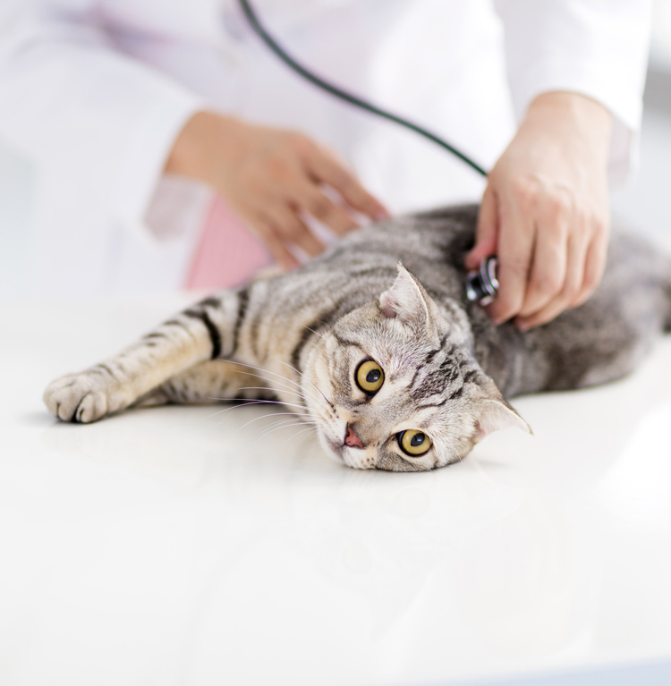

診療案内
診療内容
ワンちゃんネコちゃんの体の不調に気づかれるのはご家族の皆様です。
「何か様子がおかしいな」と感じたら、それは病気のサインかもしれません。些細なことでもお気軽にご相談下さい。
ご家族のお話をしっかりとお聞きし、動物たちの状態に合わせた的確な検査を行います。
そして根拠に基づいた分かりやすい説明を心がけ、最良の治療法をご家族と共に選んでいきます。
予防から治療まで、内科・外科・東洋医学に基づく治療・栄養学を柱としてトータルケアを目指します。

内科・予防医療
日頃ご家族が気づきやすい皮膚疾患から、慢性心不全などの循環器疾患、膀胱炎や腎不全などの泌尿器疾患、その他様々な疾患に対応しています。
さらに子犬・子猫の初めてのワクチンから、避妊・去勢手術、健康診断などを行っています。
- 内科全般
- ワクチン接種
- 避妊・去勢
- 健康診断
- 感染症予防
 外科診療
外科診療東洋医学に基づく治療
東洋医学は「生物が本来持っている治癒力を高める」ことを目的としています。
疾患の部位だけを診るのではなく、体全体のバランスを考えていきます。
鍼や灸治療では、体全体の気の流れを整えることを目的としています。レーザー治療やリハビリテーション等を組み合わせることで、高齢動物の運動機能の低下や整形疾患の治療にも効果が期待できます。
栄養学
わんちゃん、ネコちゃんの食餌を見直してみませんか？
どんな食餌が合うのか、量はどれくらいがいいのか、病気療養中に食べさせていい物は？など、しっかりとした栄養学に基づく食餌アドバイスや管理をご提供します。
臨床栄養指導認定看護師が、専門的にそして親身にご相談を受付しますので、お気軽にご予約下さい。
- 心臓疾患
- 糖尿病
- 肥満
- その他
セカンドオピニオン
「セカンドオピニオン」とは「主治医以外のお医者さんに診断や治療方針について第二の意見を聞く」ことです。治療方針を選択する際に、ほかの獣医師からの意見、検査や治療方法などの情報を知りたいと思ったときにご利用下さい。
セカンドオピニオンはあくまで「転院や転医を勧めることではなく、最善の治療をご家族と主治医との間で判断するために別の獣医師の意見を聞くこと」です。
これまでの検査や治療経過などの記録をお持ちになり、場合によっては追加検査を行ったうえでご説明をさせていただきます。
疑問に思っていることや、不安に思っていることなど、お気軽にご相談ください。
なお、診療時間が長くなる場合がございますので、「予約診察」をお勧めいたします。

オゾン療法
オゾン療法はオゾンガスを用いた治療法です。オゾンが体内で起こす反応によって様々な細胞や赤血球・白血球・血小板に働きかけ、自己治癒力を引き出すもので、動物に負担をかけず効果が期待できます。
主に注腸法（肛門から直接オゾンガスを注入する方法）を行っています。
＜作用＞
細胞代謝活性化・免疫調整・抗酸化能調整・消炎鎮痛作用・血流改善
＜推奨される疾患＞
- 高齢で免疫力低下している子の
QOL改善 - 神経疾患
- 整形疾患
- アレルギー疾患